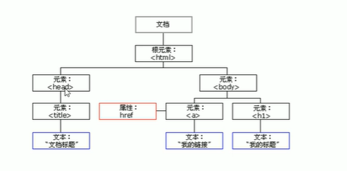
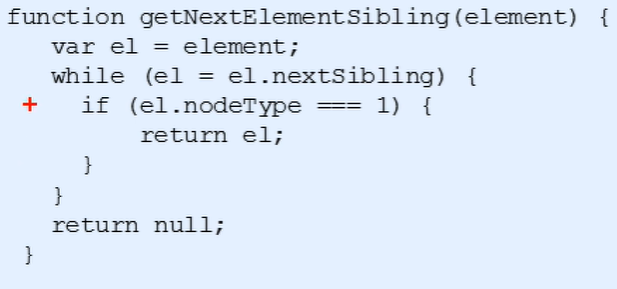

js-DOM操作-结点操作
节点：网页中的所有元素都是节点（标签、属性、文本、注释等），在DOM中，节点使用node来表示。
HTML DOM树中的所有节点均可通过JavaScript进行访问，所有HTML元素（节点)均可被修改，也可以创建或删除。
一般地，节点至少拥有nodeType(节点类型)、nodeName(节点名称）和nodeValue(节点值）这三个基本属性。
元素节点：nodeType 为 1
属性节点：nodeType 为 2
文本节点：nodeType 为 3（包含文字、空格、换行）
几点层级：
利用DOM树可以把节点划分为不同的层级关系，常见的是父子兄层级关系
父节点：
elemente.parentNode
得到的是离元素最近的父级节点（亲爸爸）如果找不到父节点就返回null
子节点：
elemente.childNodes
返回指定节点的子节点的集合，该集合为即时更新的集合
注意：子节点 childNodes 所有的子节点 包含元素节点 文本节点等等
如果只想要获得里面的元素节点，则需要专门处理。所以我们一般不提倡使用childNodes而是使用parentNode.children (非标准)
parentNode.children (非标准) parentNode.children是一个只读属性，返回所有的子元素节点。它只返回子元素节点，其余节点不返回(这个是我们重点掌握的)。
虽然children是一个非标准，但是得到了各个浏览器的支持，因此我们可以放心使用
firstChild是返回第一个子节点 不管是文本节点还是元素节点 lastCHild类似
firstElementCHild 返回第一个子元素节点（这两个方法有兼容性问题，IE9以上才支持）
实际开发中，既没有兼容性问题又返回第一个子元素
element.children[0]
兄弟节点
node.nextSibling 返回当前元素得到下一个兄弟节点，找不到则返回null。同样，也是包含所有节点
node.previoussibling 返回当前元素上一个兄弟节点，找不到则返回null。同样，也是包含所有的节点。
nextElementsibling返回当前元素下一个兄弟元素节点，找不到则返回null
previousElementsibling返回当前元素上一个兄弟元素节点，找不到则返回null
（这两个方法有兼容性问题，IE9以上才支持）
封装的兼容性函数

创建节点、添加节点
创建节点：document.createElement(‘tagName’) 方法创建由tagName指定的HTML元素。因为这些元素原先不存在，是根据我们的需求动态生成的，所以我们也称为动态创建元素节点。
添加节点：node.appendchild(child) 方法将一个节点添加到指定父节点的子节点列表末尾。类似于css里面的after伪元素。
node.insertBefore(child，指定元素)方法将一个节点添加到父节点的指定子节点前面。类似于css里面的before伪元素。
删除节点
node.removeChild(child)
node.removeChild() 方法从DOM中删除一个子节点，返回删除的节点
复制节点
node.cloneNode()
node.cloneNode() 方法返回调用该方法的节点的一个副本，也称为克隆节点/拷贝节点
注意：如果括号参数为空或者为false，则是浅拷贝，即只克隆复制节点本身，不克隆里面的子节点
如果括号参数为空或者为true，则是深拷贝，复制标签复制里面的内容（会复制节点本身以及里面所有的子节点）
三种动态创建元素区别
document.write() 是直接将内容写入页面的内容流，但是文档流执行完毕，则它会导致页面全部重绘
element.innerHTML 是将内容写入某个DOM节点，不会导致页面全部重绘
element.innerHTML创建多个元素效率更高（不要拼接字符串，采取数组形式拼接），结构稍微复杂
document.createElement() 创建多个元素效率稍微低一点点，但是结构更清晰